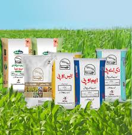

Sugarcane is an important cash crop in many tropical and sub tropical countries accounts for over 2/3 of world sugar production. In Pakistan, sugarcane is an important and high value cash crop. It is mainly grown for sugar and sugar related production. It is an important source of income and employment for the farming community of the country. The sugar industry plays a pivotal role in the national economy of our country. Sugarcane provides sugar, besides bio fuel, fiber, organic fertilizer, chipboard, paper and many other by-products / co-products with ecological sustainability. Its share in value added of agriculture and gross domestic production are 3.7 percent and 0.8 percent, respectively. During 2010-11 season sugarcane was cultivated on an area of 1.241 million hectares, 20.6 percent higher than the previous year. Sugarcane production for the year 2011-12 is estimated at 58.0 million tons in contrast to last year’s production 55.3 million tons. This indicates significant improvement of 16.8 percent over the production of last year.
Sugarcane is a deep-rooted crop and proper land preparation plays an important role in the development of cane root system, and achieving optimal growth of the crop. Land should be prepared by deep ploughing at least after every two years. The soil should be disked. It is very important that at least 8 to 10 cart loads of well-rotten farmyard manure (FYM) should be applied a month prior to land preparation. Press mud from the sugar industry is another excellent source of organic matter and nutrients. Green manuring may also serve the purpose. Soil in the prepared field should be friable and well worked so that full germination takes place and later on plants grow without any inhibiting barriers (compact sub-soil layer).

Sugarcane must be planted either in September or in Feb.-March. September planted crop usually produces 25 to 35 % higher yield.
Sugarcane should be planted at a row spacing of 100 cm. Three-budded double setts should be placed end to end in the furrows covered with 2 to 3 cm soil layer.
About 80 to 100 mounds of thin cane varieties and 100 to 120 mounds of thick varieties is sufficient to plant one acre.

Use healthy seed of improved varieties of sugarcane. This can increase cane yield from 20 to 25 per cent. Sugarcane varieties recommended for various provinces are given in Table 4. Around 95 per cent planted BL-4 variety in the study area. This variety flourishes very well in heavy fertile and well-drained soil with good irrigation. As the variety occupied good fields, it established high yields. New variety BF-12-is yet in the stage of multiplication, while SPSG -26 and Th-10, has just been introduced. Results show that 87 per cent planted recommended varieties and the remaining 13 per cent planted non-recommended varieties The economic life span of sugarcane variety varies from 8 to 10 years and after that replacement the variety is necessary.
It is very important to take care of the irrigation requirements of sugarcane, particularly in summer months. Farmers must plan their acreage to be planted under cane crop according to the available water at their farm. Keep in mind that each field should get at least 16 to 20 irrigations during the crop year adjusting the irrigation schedule according to rainfall in summer.
Table of Irrigation Schedule:
March-April 12-14 days
May-June 8-10 days
July-August 10-15 days (if there is no rainfall, irrigation interval should be 8-10 days)
September-October 15-20 days
November-December 25-30 days
Fertilizer's use in Pakistan is imbalanced, inadequate and improper. Most of the cane growers in the country use only nitrogenous fertilizers while others use an imbalanced combination of N and P. Use of Potash is almost neglected in cane crop. It is very important to use proper doses of balanced fertilizers to exploit the maximum yield potential of cane crop. All phosphorus and potash and one fourth N should be applied at the time of planting. It is preferable that P and K may be applied in furrows where seed setts are to be placed. Rest of the nitrogenous fertilizer may be applied in three equal splits i.e. during April, May and by mid June to February-March planted crop
sect pests play an important role in reducing the sugarcane yield. The most serious insect pests are sugarcane borers, Pyrilla, and whitefly. In some areas mealy bug, black bug and army worm are also causing damage.
In Pakistan exact estimates of yield losses due to insect attack are lacking but it has been reported that top borer, stem borer, gurdaspur borer and Pyrilla cause a reduction in yield from 15-20, 10-20 and 30-35 percent , respectively. In some cases as high as 80-85 percent reduction in crop yield due to insect attack has been reported
These losses in sugarcane can only be minimized by proper protection of the cane crop from insect pests with scientifically designed IPM Programme throughout the year. Pesticides are applied as and when needed in combination with cultural practices, resistant varieties and introduction and conservation of natural enemies. Pesticides will continue to play an important role in the IPM Programme. The primary difference, however, is that these products will be used selectively and judiciously.
Farmyard manure should always be used when it is fully rotten. This will reduce termite attack. Trash in the field should not be kept for longer time and it may be burnt. Dry shoots attacked by the bores must be pulled out and burnt. Always cut the crop as close to the ground as possible. Use of light traps will help controlling the spread of borers killing their adults. Earthing up during May-June will help in controlling Gurdaspur borer as the adults will not be able to come out of the ridges of the soil. In case of severe attack of any insect, do not keep the crop as ratoon.
Besides using pesticides/insecticides, insects could also be controlled by biological measures. These control measures are safe for environment, and hazard free. Cotesia flavips is an important larval parasitoid of sugarcane bores. Its female lays eggs inside the borer larva and after hatching, its larvae feed inside the borer larva. Adult parasitoid attack more borer larvae in the field. Trichogramma chilonis destroys the eggs of sugarcane borers. Its female lays eggs inside the eggs of borers. Parasitoid larvae feeds in the host eggs, destroying them. Epi-pyropes destroys sugarcane pyrilla. These parasitoids are mass multiplied in the laboratory and then released in the cane fields

For controlling sugarcane diseases, use healthy seed which is disease-free and preferably plant disease-resistant varieties. Treat the seed with fungicide/s before planting. The diseased plants from the field should be removed and either buried or burnt. Seed may be treated with hot water at 520 C for 30 minutes.
The practice of heat therapy is becoming more common at seed-production centers to rid seed of ratoon stunting disease, grassy shoot, and leaf scale. This treatment consists of submerging the cane setts in water heated to 520 C for two hours. In the hot air treatment or the moist hot air treatment, whole cane stalks are treated at 540 C for eight and four hours, respectively. The most hot air treatment is preferred, however, because the hot air treatment injures the buds which ultimately reduce germination. When planting a new crop, it is essential to use seed from samples of the best patches of cane crop, free of disease and insect pests. Disease-free, good-quality seed increases yield by 10-15%.
Stop irrigation 25 to 30 days before the harvest of crop and do not leave the harvested crop for long in the field. In case it has to be kept for a prolonged period, it should be covered with trash. Different varieties planted may be harvested according to their maturity. Harvesting of early maturing varieties may be started during November, mid season varieties during December and the late maturing varieties during January. The crop harvested during February-March gives good ratoon crop.
Harvesting is done when the crop has fully matured and ripened. Early varieties and ratoon crops are the first to be harvested. When the stem is close to the surface, great vigilance is required in order to cut the maximum portion of the stem, which is valuable both for its weight and sugar content. The harvested cane should be immediately hauled to the mill otherwise weight and sucrose losses may occur. For this purpose, transport should be arranged in advance.
As we have seen that from all the above mentioned facts that the major cause of low sugarcane production is improper use of agricultural methods. And also from pervious data we can see that as we have increased our sugar production per acre our cane yield and sugar recovery has decreased. This is due to improper use of cane variety and cultivation process. So if we want to increase the quality of sugar cane so we need to fallow the proper way as per described by the Agricultural Department.